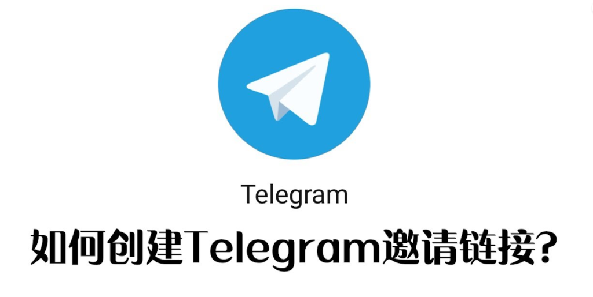

电报个人链接怎么弄？
要创建电报（Telegram）个人链接，打开电报应用，进入设置，点击你的用户名。然后选择“用户名”，输入你想要的用户名。如果用户名可用，点击“保存”。这样你就有了一个形如 t.me/yourusername 的个人链接，可以分享给别人直接访问你的电报账户。

创建电报个人链接
注册电报账号
- 下载应用: 首先，需要在手机或电脑上下载电报（Telegram）应用。可以通过应用商店或电报官网下载最新版本的电报客户端。安装后，你将能享受电报提供的多种高级通讯功能。
- 打开应用并选择注册: 打开电报应用后，选择“开始使用”，进入注册界面。你需要提供一个有效的手机号码，用于接收验证短信。确保使用一个常用的号码以便未来需要验证或恢复账户时使用。
- 验证手机号: 输入你的手机号码后，电报会发送一个验证码到这个号码。输入收到的验证码以完成注册过程。这一步骤是为了确保用户的安全性，避免账户被未授权的用户访问。
登录并进入设置
- 登录账户: 使用你注册时的手机号码登录电报。如果你是在新设备上登录，需要重复短信验证过程。这确保了账户的安全，防止未经授权的设备访问。
- 进入设置选项: 登录后，点击右下角的设置图标（或在侧滑菜单中找到“设置”选项），进入设置菜单。这里你可以控制各种隐私和安全设置，以及个性化你的电报体验。
- 个人资料设置: 在设置菜单中，可以修改个人资料，如头像、名字和用户名等。这里重点是设置一个易于记忆且独一无二的用户名，它将用于生成你的个人链接。个人链接是连接你与外界的桥梁，使他人能够更快找到你并建立通讯。
设置电报用户名
选择合适的用户名
- 个性化用户名: 当选择电报用户名时，尽量选择一个反映你个性或品牌的名字。这个用户名不仅是你的身份标识，也会成为他人识别和记忆你的一个重要方式。确保它既独特又易于发音，便于他人在需要时快速找到你。
- 简短且易记: 一个好的用户名应当简短且易于记忆。避免使用复杂的字符组合，如过多的数字和特殊符号，这样可以让人更容易地记住并正确输入你的用户名。
- 反映职业或兴趣: 如果可能的话，让你的用户名反映你的职业或个人兴趣。例如，如果你是一位摄影师，可以考虑将“photo”或“camera”加入用户名中，这样对你的职业进行标识，同时也可能吸引有相同兴趣的用户。
检查用户名可用性
- 使用电报的检查功能: 在电报中输入你想要的用户名后，系统会自动检查该用户名是否可用。如果用户名已被占用，电报会提示你需要选择其他的用户名。
- 准备备选用户名: 在设置用户名之前，最好准备几个备选的用户名。这样，如果你首选的用户名已被其他用户使用，你可以快速选择另一个备选名，无需现场再费心思考虑。
- 及时更新和保护用户名: 一旦你选择了一个可用的用户名，并且符合你的需求，尽快进行设置。此外，为了保护你的用户名不被他人恶意占用，建议定期检查账户的安全设置，确保你的电报账户和个人信息的安全。
分享电报个人链接
通过社交媒体分享
- 选择合适的平台: 根据你的社交媒体跟随者或朋友的活跃度选择合适的平台进行分享。常用的社交媒体包括Facebook, Twitter, Instagram等。选择一个你的目标受众最活跃的平台，可以最大化你个人链接的曝光率。
- 制作引人注目的帖子: 创建一个视觉和文字都能吸引人的帖子来分享你的电报链接。可以使用吸引眼球的图片或短视频，以及简洁有力的文案，明确告诉人们为什么他们应该点击这个链接。
- 使用合适的标签: 在你的帖子中使用相关的标签（hashtags），可以帮助帖子在社交媒体上获得更多的可见性。选择与你的内容相关且常用的标签，这样可以增加帖子被感兴趣的用户看到的机会。
通过电子邮件分享
- 创建专业的电邮内容: 当通过电子邮件分享你的电报链接时，确保你的邮件内容专业且有吸引力。包括一个简洁的介绍，说明为什么接收者会对加入你的电报频道感兴趣。
- 个性化邮件信息: 尽量个性化你的邮件信息，例如使用收件人的名字，这样可以提高邮件打开率和互动率。个性化的接触可以让收件人感觉更被重视，从而可能更愿意点击链接。
- 定期跟进: 分享链接后不要就此停止，可以通过后续的邮件来提醒未响应的用户。不过，要注意平衡，避免发送过多邮件造成干扰。适时的提醒可以提高链接的点击率和参与度。

电报个人链接的重要性
提高通讯效率
- 直接访问: 电报个人链接提供了一种直接而快速的方式来访问用户的电报账户，无需搜索用户名或电话号码。这种直接性显著提高了通讯的速度和效率，尤其是在需要快速建立联系的商务或社交场合。
- 简化联系过程: 使用个人链接，你可以避免复杂的添加好友流程，如发送请求等待确认等步骤。人们只需点击链接即可直接加入你的联系列表，极大地简化了通讯过程。
- 提升响应速度: 当你分享个人链接并邀请他人直接联系你时，这种无缝的交流方式可以显著提升双方的响应速度。尤其在处理紧急事务时，能够迅速获取回复或反馈，确保信息流通的及时性。
增强个人或企业形象
- 专业性展示: 电报个人链接可以作为你专业形象的一部分。它不仅展示了你对现代通讯工具的适应，也体现了你在业务处理中追求效率和直接性的态度。
- 品牌一致性: 对于企业而言，定制化的电报链接可以加强品牌识别。通过统一的链接格式，可以使品牌在各种通讯平台上保持一致的形象，增强公众的品牌认知。
- 增加可信度: 提供一个电报个人链接也可以增加你的可信度。一个清晰的链接让人感觉到你是开放且易于接触的，这对建立信任关系及长期合作关系尤为重要。

电报链接安全设置
设置隐私保护
- 调整隐私设置: 在电报中，可以通过访问设置菜单中的“隐私和安全”选项来调整谁可以看到你的电话号码、最后上线时间以及其他个人信息。确保这些设置符合你的隐私需求，限制不必要的信息暴露。
- 启用消息加密: 电报提供端对端加密的私密聊天选项，可以确保发送的消息只有你和接收者能看到。使用这一功能可以保护你的通信内容不被第三方窥视。
- 管理活动会话: 定期检查你的电报账户上的活动会话，这包括所有登录过你账户的设备。如果发现任何未授权的活动或不再使用的设备，应立即结束那些会话以保护账户安全。
防止未经授权的访问
- 使用强密码和两步验证: 为你的电报账户设置一个强密码，结合数字、字母和特殊字符。此外，启用两步验证增加一层额外的安全保障，即使有人知道你的密码，没有第二步验证信息也无法登录你的账户。
- 限制敏感信息的共享: 当使用电报及其他社交媒体时，要谨慎分享可能影响安全的个人信息。例如，避免在公共群组中分享你的电报个人链接或其他可能被滥用的敏感信息。
- 教育家人和朋友安全意识: 增强你的联系人对安全的认识也是保护自己安全的一部分。确保他们知道如何安全地使用电报，以及如何识别和处理潜在的安全威胁。
如何在电报中设置个人用户名？
首先打开电报应用并进入设置，点击“编辑个人资料”，然后找到“用户名”部分输入你想要的用户名。如果用户名可用，你就可以保存并立即开始使用你的个人链接，如 t.me/yourusername。
电报个人链接的好处是什么？
电报个人链接使得其他用户能够通过一个简单的URL访问你的电报个人资料或群组。这样的链接便于分享，并且可以通过社交媒体、电子邮件或其他方式快速传播，提高沟通效率和扩展社交网络。
如何确保电报个人链接的安全？
确保电报个人链接的安全，需要在电报的隐私设置中进行调整。启用两步验证，定期更改密码，限制谁可以看到你的在线状态和个人信息。此外，避免分享链接到不可信的平台或个人。这些措施有助于防止未经授权的访问和保护你的账户安全。
其他新闻
纸飞机是什么软件？
纸飞机（Telegram）是一款免费的即时通讯软件，支持文字、语音、视频通话及文件传输。它采用端到端加密保护隐 […]
2025 年 04 月 01 日
TG解封要多久？
账户被封禁后的Telegram解封时间取决于封禁的原因。通常情况下，临时封禁可能持续几小时到几天，而永久封禁则 […]
2024 年 11 月 13 日

Telegram怎么语音验证码？
如果 Telegram 在验证过程中发送语音验证码，你可以选择“接收语音验证码”选项。系统会拨打你的电话并通过 […]
2024 年 12 月 13 日
Telegram下载设置在哪？
在Telegram中，下载设置可以通过以下步骤进行调整：打开Telegram，点击左上角的菜单图标。进入“设置 […]
2024 年 10 月 27 日